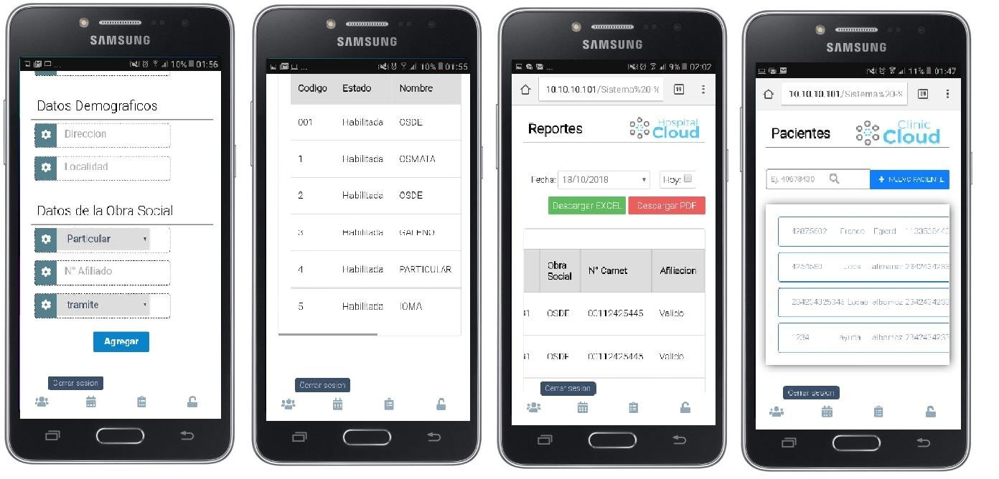
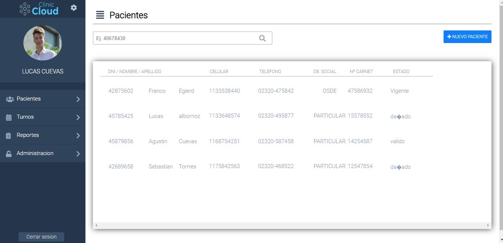
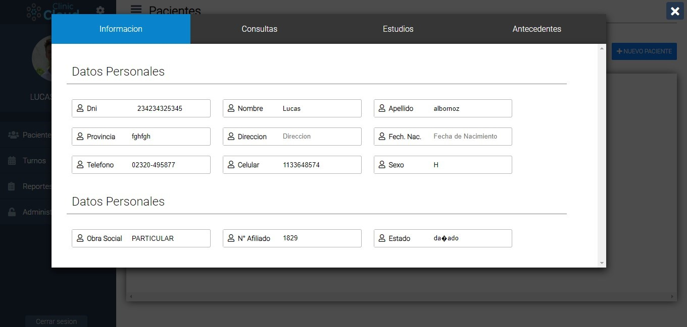
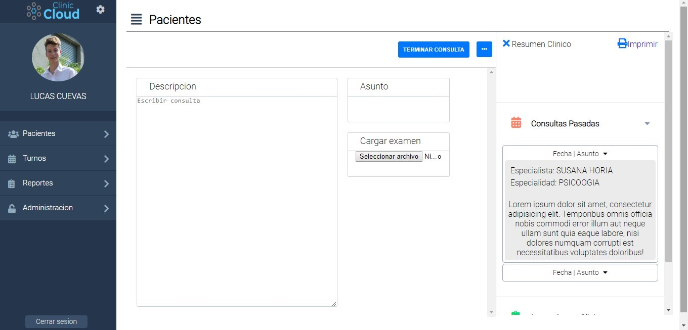
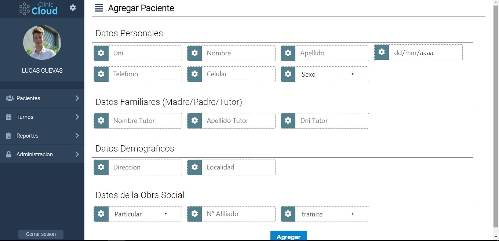

Clinic Cloud es un sistema clínico dedicado a mejorar y agilizara la gestion y administracion de Turnos, Historial Clinico del paciente.
por otro lado tabien facilita la gestion administratiba y financiera a travez de reportes generado por el mimo sistema. Esto en conjunto facilita las tareas diarias para poder brindar un mejor servicio de atención al paciente, ayudando también en la labor del profesional de salud.
El sistema es completamente personalizable.
Layout
Version Movil
El sistema se adapta a los diferentes dispositivos moviles

Listado de Pacientes
En esta seccion podras buscar y visualizar los datos basicos de los pacientes, y acceder al historial clinico obra social.

Informacion del paciente
En esta seccion podras buscar y visualizar los datos de los pacientes ya sea historial clinico, tipo de obra social. dependiendo del tipo de permisos tengas podras actualizar algunos datos del paciente.

crear consulta
desde el listado de paciente o de turno tendra un acceso directo a la pantalla de crear consulta del paciente seleccionado,
y asi crear la consulta que quedara registrada en su historia clinica, a demas podra ver el historial clinico del paciente en todo momento.

Agregar paciente
En esta pantalla se registran los pacientes que no tienen ninguna consulta previa, es decir
, registrar pacientes que sea su primera vez en ir al establecimiento.

Reportes
En esta seccion podras descargar en pdf o formato .xlsx filtrando por fecha reportes personalizados segun los requerimientos del usuario.

{kind=link}
{kind=link}
{kind=link}
{kind=link}
{kind=link}
{kind=link}